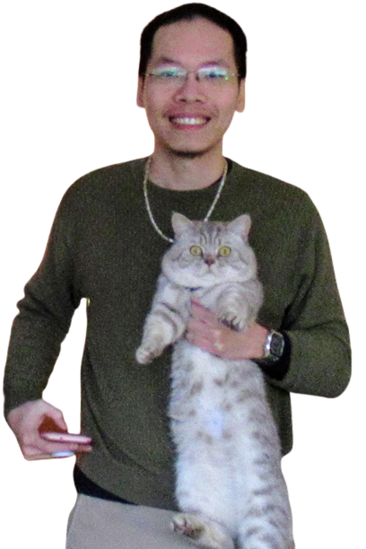

Thao Nguyen (Shibe)
 |
Hi, I'm Thao! 👋
｡𖦹°‧ I'm taking a PhD Minor in Educational Psychology and was lucky enough to learn a lot about stereotypes and STEM from Prof. Christy Starr (thank you!!).
I'm looking for research opportunities/interns around Personalized AI ~~ Please email me if you think I'd be a good fit~ thao.nguyen@wisc.edu 🤗 |
About Me
4th year PhD Student – Univeristy of Wisconsin - Madison.
Contact: “thao.nguyen at wisc dot edu“ | “thao.ntp0414 at gmail dot com”.
Research interests: Personalized AI; Multimodal Models;
Publications [Selected | All ]

|
X-Fusion: Introducing New Modality to Frozen Large Language Models
|

|
Yo'Chameleon: Personalized Vision and Language Generation
|

|
Yo'LLaVA: Your Personalized Language and Vision Assistant
|

|
Edit One for All: Interactive Batch Image Editing
|

|
Visual Instruction Inversion: Image Editing via Visual Prompting
|

|
Lipstick ain't enough: Beyond Color Matching for In-the-Wild Makeup Transfer
|
Not CS publication :D

|
Are Dining Expectations Culturally Conditioned? An analysis of Asian vs. American Restaurants (yes, it's not a CS conference :D)
|
Random
 vietnamese women in computer science (viet-wics)
vietnamese women in computer science (viet-wics)
 cs-conference-posters (pptx)
cs-conference-posters (pptx)
 awesome-personalized-lmms
awesome-personalized-lmms
 awesome-makeup-transfer
awesome-makeup-transfer
Misc

|
"🎉 Bo and Mam are appearing on multiple figures of my papers. Can you spot them? 😉" |
 |

{kind=link}
{kind=link}